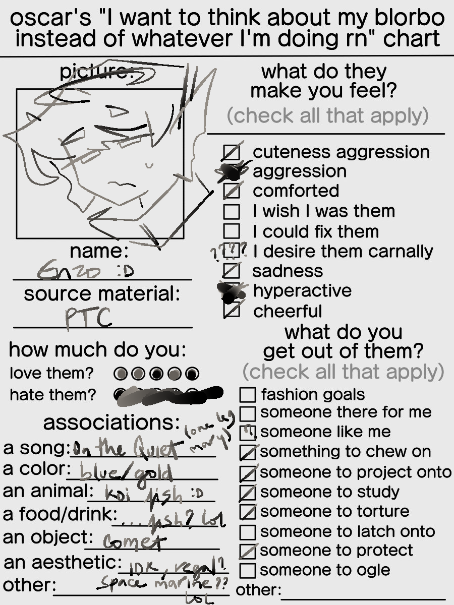
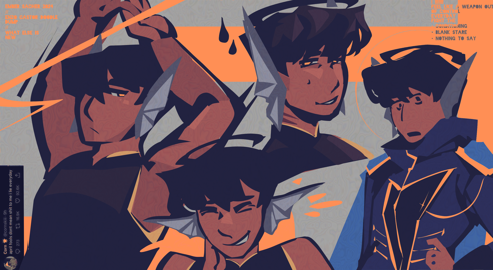

ok
creation date: may 20
characters featured: enzo
ive gaslit myself into thinking i liked the cold for the whooole year, but then summer hits and my mood immediatly becomes way better than it's ever been, funny how that works. opening my blinds and the sun is up early and the world is beautiful and i'm warm and maybe the thermostat is an illusion but i'd rather be sweating it out than huddled under my blankets in a dreary-ass freezing room. im a summer girlie at heart, urkkk so dramatic. here is a celebratory strange drawing of enzo for the occasion. ok. don't think aboyt it

B-B-B-BONUS ROUND???!??!?!??!
BONUS ROUND 2???????
creation date: may 31
ya i didn't know where else to put these :shrug: